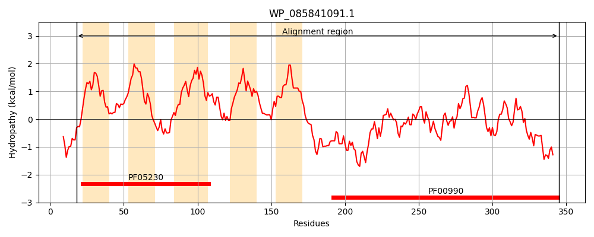
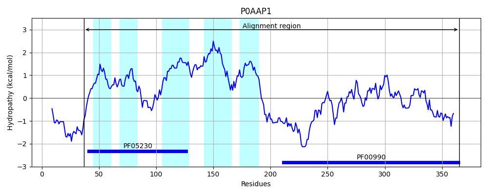
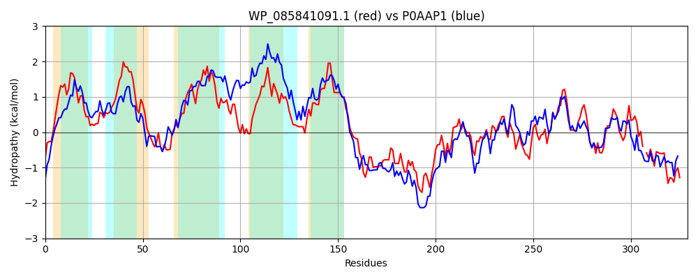

Hit Accession: P0AAP1
Hit TCID: 9.B.34.1.2
Hit Description: gnl|BL_ORD_ID|8680 gnl|TC-DB|P0AAP1|9.B.34.1.2 Probable diguanylate cyclase AdrA OS=Escherichia coli (strain K12) GN=adrA PE=1 SV=1
Mach Len: 329
e:0.000000
Query TMS Count : 5
Hit TMS Count: 5
TMS-Overlap Score: 4.300000
Predicted Substrates:None
BLAST Alignment:
Score: 420 , Bit scores: 166 bits, E-value: 2.8e-48, Alignment length: 329, Percentage identity: 30
Query: 18 FIKRVYFLRQIGVVLCFLPIYSVLQEQSHQKITIALLILNALIWPSVAYLASMMSKDMLSTEKKNMVLDSFWAGIWIAVMQVSPIPSLFIISVQIADRYAAGGWKILKPALTWMMISFVIVWLANDFRYTIEFSTRTVLLSLPLATCYPIVLSVVSRHLSLKLRKRRELLEKQALMDPGLDLPNRRFFEQKMESAFRATRKKRIHSYLMLIDVDNFKIINDTYGHEVGDAVLSRISTILRECAGEKDVPARFGGDELAIIVNNSNSNLVITMVHIIQKKIKDLSLPSHKDIYCTVSIGISCAENKES-IIEWIKEADKMLYEVKRNGKN 345
F +RV R +G+ FLPI S L +L+ A +WP +A+ + + D LS E N+ D+ AG+W+ VM V+ +PS ++ + + AGG ++ L M++S ++ + + LSLP+ YP++ VS + KL + + L+ + D + NRR +E + + F R+ + L++ID+D+FK INDT+GH+VGD + ++ L+ DV RFGGDE A+I++ + + IT + + + + L LP+ + +S+G++ + S EW+K AD LY+ K+ G+N
Sbjct: 37 FARRVRLPRAVGLAGMFLPIASTLVSHPPPGWWWLVLVGWAFVWPHLAWQIASRAVDPLSREIYNLKTDAVLAGMWVGVMGVNVLPSTAMLMIMCLNLMGAGGPRLFVAGLVLMVVSCLVTLELTGITVSFNSAPLEWWLSLPIIVIYPLLFGWVSYQTATKLAEHKRRLQVMSTRDGMTGVYNRRHWETMLRNEFDNCRRHNRDATLLIIDIDHFKSINDTWGHDVGDEAIVALTRQLQITLRGSDVIGRFGGDEFAVIMSGTPAESAITAMLRVHEGLNTLRLPNTPQVTLRISVGVAPLNPQMSHYREWLKSADLALYKAKKAGRN 365 | Protein Hydropathy Plots: |
|---|
|  |  |
Pairwise Alignment-Hydropathy Plot:
|
|---|
|  |